Capítulo 2 Distribuciones de frecuencia
Una vez identificadas las variables y reconocido su nivel de medición, es necesario darle a la matriz de datos un formato que permita hacer lecturas de los resultados, ya que es imposible observar una tabla que tenga gran cantidad de filas (casos) y muchas columnas (variables). El siguiente fragmento de matriz de datos:
## ANO4 TRIMESTRE AGLOMERADO CH03 CH04 CH05 CH06
## 1 2018 3 2 1 2 19/03/1953 65
## 2 2018 3 2 1 1 25/12/1980 37
## 3 2018 3 2 6 2 05/01/1950 68
## 4 2018 3 2 3 1 28/12/2004 13
## 5 2018 3 2 1 1 31/10/1941 76
## 6 2018 3 2 2 2 21/09/1942 76Muestra las primeras variables y primeros casos correspondiente a la aplicación del cuestionario individual de la Encuesta Permanente de Hogares9, del tercer trimestre de 2018, que tiene 56879 casos. Las variables están codificadas, tanto en su nombre como en sus categorías. Por ejemplo, CH04 es sexo y sus categorías son 1 = varones, 2 = mujeres, CH06 es la edad y los números representan años cumplidos, etc. Esas codificaciones están en el documento Diseño de Registro de la Base Usuario de la EPH.10
Cada columna de la matriz de datos contiene los valores que se han observado en cada uno de los individuos (filas); si se observa verticalmente, cada columna es una secuencia de números; un vector. Para el caso de CH04 (sexo), los primeros 25 valores de esta columna son:
## [1] 2 1 2 1 1 2 1 2 2 1 1 2 1 1 2 1 1 1 1 2 1 1 1 2 1Así presentada, la secuencia se llama serie simple y solo puede analizarse cuando son muy pocos casos, sería imposible en este ejemplo, con 56879 filas.
El más elemental de los resúmenes consiste en contar, para una variable determinada, cuantas apariciones tiene cada categoría. En la columna encabezada CH04 (sexo) pueden contarse cuántos unos (1s) y cuántos doses (2s) hay en total.
2.1 Tablas de distribución de frecuencia
Las tablas resumen los recuentos, en este ejemplo:
| Var1 | Freq |
|---|---|
| 1 | 27219 |
| 2 | 29660 |
| Total | 56879 |
Cuando se rotulan la variable y sus categorías:
| sexo | casos |
|---|---|
| varones | 27219 |
| mujeres | 29660 |
| Total | 56879 |
A la cantidad de casos, que proviene del recuento del número de unos y doses en la columna de sexo, se llama frecuencia absoluta simple y se la indica como f. La tabla resulta entonces:
| sexo | f |
|---|---|
| varones | 27219 |
| mujeres | 29660 |
| Total | 56879 |
El total de 56879 casos resulta de la suma de todas las frecuencias absolutas simples, de manera breve, esto se indica así: \[\sum_{i=1}^{k}f_i =n\]
Que se lee “La sumatoria de las frecuencias (f) desde 1 hasta k es igual al total de observaciones (n)”. En esa expresión:
\(\sum\) es el símbolo de suma o sumatoria e indica la realización de esa operación (sumar).
Las \(f_i\) son las frecuencias absolutas simples. El subíndice i va cambiando entre categorías.
La expresión \(i=1\) señala desde qué valor de i se inicia la suma, así como k señala la última categoría a sumar. En el ejemplo de las tablas, el valor de \(k\) es 2 (solo hay dos categorías), por lo que solo hay dos frecuencias a sumar: \(f_1\) y \(f_2\), correspondientes a las cantidades de varones y de mujeres.
\(n\) es el total de casos (observaciones).
Lo mismo puede indicarse como:
\[f_1 + f_2 + ⋯ + f_k = n\]
Que, en el caso de la tabla anterior resulta simplemente:
\[f_1 + f_2 = 27219 + 29660 = 56879\]
| La frecuencia absoluta simple de cada valor de la variable es el número de casos que asumen ese valor. Se indica \(f\). |
Si se quisieran comparar estas frecuencias con las de otra matriz de datos que tuviera un número total de casos diferente de 56879, sería inadecuado usar los valores absolutos aquí presentados. Por ejemplo, la comparación de la distribución por sexos entre las personas que trabajan en el sector estatal y en el sector privado.
| sexo (sector estatal) | f |
|---|---|
| 1 | 2468 |
| 2 | 2810 |
| Total | 5278 |
| sexo (sector privado) | f |
|---|---|
| 1 | 10618 |
| 2 | 7276 |
| Total | 17894 |
No es clara la comparación entre el número de mujeres en los dos sectores, porque la cantidad total de casos es muy diferente, por eso es necesario comparar el peso relativo de las mujeres respecto del total, y no su número absoluto, se trata de su contribución al total de casos.
Para calcularlo se divide el número de mujeres en el total general. En el ejemplo, para el sector estatal es 0.532 que es el 53.2% de los casos. Es decir que las mujeres constituyen una proporción de 0.532 o bien que representan el 53.2% del total. Mientras que en la segunda tabla, la proporción de mujeres es 0.407 que es el 40.7% de los casos.
Estas proporciones se denominan frecuencias relativas simples, se simbolizan como \(f'\) (efe prima), y se calculan dividiendo la frecuencia absoluta por el total. Ahora puede completarse la tabla anterior agregando otra columna.
| sexo (sector privado) | f | f’ |
|---|---|---|
| 1 | 10618 | 0.59 |
| 2 | 7276 | 0.41 |
| Total | 17894 | 1 |
El valor 1 que resulta de sumar las dos frecuencias relativas corresponde al 100% de los casos, es decir a las 17894 observaciones. Usando la misma simbología que antes: \[\sum_{i=1}^{k} f'_i =1\]
Que afirma que la suma de las frecuencias relativas simples (\(f’\)) es igual a uno. La salida para la variable ESTADO tiene la siguiente forma:
| ESTADO | f’ |
|---|---|
| 0 | 0.00 |
| 1 | 0.41 |
| 2 | 0.03 |
| 3 | 0.41 |
| 4 | 0.15 |
| Total | 1.00 |
Cuando se codifica, viendo las categorías en el documento Diseño de registro…, queda:
| ESTADO | f’ |
|---|---|
| entrevista no realizada | 0.00 |
| ocupade | 0.41 |
| desocupade | 0.03 |
| inactive | 0.41 |
| menor de 10 años | 0.15 |
| Total | 1.00 |
Al construir estas tablas de distribución de frecuencias se renuncia a una parte de la información que estaba en la matriz de datos. En ella se podía seguir por la fila a cada persona que respondió al cuestionario y describirla en cada uno de sus aspectos relevados (variables). Por el contrario, la tabla de distribución de frecuencias de sexo solo dice que hay 27219 varones y 29660 mujeres o, en la tabla de ESTADO, que hay 23398 que están trabajando, 1870 que no trabajan y buscan trabajo, etc., pero no se informa quiénes son. Esta pérdida de información es parte inevitable del proceso en el que se resumen datos, cuanto más sintética sea la presentación, tanta más información habremos perdido. Esto puede visualizarse como el proceso en el que se “toma distancia” de los datos originales: cada vez se tiene una mejor visión de conjunto, pero al mismo tiempo se pierden detalles.
| La frecuencia relativa simple de cada valor de la variable es la proporción de casos que asumen ese valor. Se indica \(f'\). |
Los dos ejemplos mostrados hasta aquí corresponden a variables medidas a nivel nominal, por lo que los números no son más que códigos, no representan orden ni puede considerarse la distancia entre ellos. ¿Qué cambia con un nivel de medición más elevado? Con el mismo principio usado para las variables nominales, la forma de la tabla de distribución de frecuencia para la edad (CH06) de estudiantes de una carrera universitaria sería:
| edad | f | f’ |
|---|---|---|
| 17 | 8 | 0.00 |
| 18 | 247 | 0.07 |
| 19 | 355 | 0.09 |
| 20 | 377 | 0.10 |
| 21 | 372 | 0.10 |
| 22 | 364 | 0.10 |
| 23 | 331 | 0.09 |
| 24 | 241 | 0.06 |
| 25 | 237 | 0.06 |
| 26 | 188 | 0.05 |
| 27 | 156 | 0.04 |
| 28 | 134 | 0.04 |
| 29 | 98 | 0.03 |
| 30 | 84 | 0.02 |
| 31 | 76 | 0.02 |
| 32 | 65 | 0.02 |
| 33 | 61 | 0.02 |
| 34 | 36 | 0.01 |
| 35 | 46 | 0.01 |
| 36 | 44 | 0.01 |
| 37 | 20 | 0.01 |
| 38 | 21 | 0.01 |
| 39 | 27 | 0.01 |
| 40 | 21 | 0.01 |
| 41 | 18 | 0.00 |
| 42 | 14 | 0.00 |
| 43 | 19 | 0.01 |
| 44 | 18 | 0.00 |
| 45 | 4 | 0.00 |
| 46 | 10 | 0.00 |
| 47 | 7 | 0.00 |
| 48 | 8 | 0.00 |
| 49 | 4 | 0.00 |
| 50 | 6 | 0.00 |
| 51 | 7 | 0.00 |
| 52 | 10 | 0.00 |
| 53 | 3 | 0.00 |
| 54 | 5 | 0.00 |
| Total | 3742 | 1.00 |
Sobre esta tabla se pueden calcular otras frecuencias, que respondan a preguntas como ¿cuántas personas de menos de 20 años fueron encuestadas? Para saber eso, hay que contar cuántos casos hay con edades menores a 20: con 17, 18 o 19 años hay 610 casos, que provienen de sumar las frecuencias de esas categorías (8+247+355). Así, además de indicar cuántos casos (o qué porcentaje de ellos) tiene determinados valores de la variable, resulta de interés mostrar cuántos (y también qué porcentaje) tienen valores iguales o menores a uno determinado. Esto va a ser indicado por las frecuencias acumuladas, que responden a la pregunta por la cantidad de casos que hay por debajo de una categoría de la variable. Pero esto solo está permitido con variables medidas a escala ordinal o superior, porque con variables nominales no se pueden hacer juicios de orden, como decir que una categoría es mayor o menor que otra. El cálculo de las frecuencias acumuladas consiste en contar las frecuencias de la categoría que interesa y sumarla a las frecuencias de las categorías anteriores a ella. Estas frecuencias acumuladas se vuelven relativas al dividirlas por el total de casos y dan lugar a las frecuencias relativas acumuladas. En el ejemplo de la distribución de las edades de estudiantes resulta:
| edad | f | f’ | F | F’ |
|---|---|---|---|---|
| 17 | 8 | 0.002 | 8 | 0.002 |
| 18 | 247 | 0.066 | 255 | 0.068 |
| 19 | 355 | 0.095 | 610 | 0.163 |
| 20 | 377 | 0.101 | 987 | 0.264 |
| 21 | 372 | 0.099 | 1359 | 0.363 |
| 22 | 364 | 0.097 | 1723 | 0.46 |
| 23 | 331 | 0.088 | 2054 | 0.548 |
| 24 | 241 | 0.064 | 2295 | 0.612 |
| 25 | 237 | 0.063 | 2532 | 0.675 |
| 26 | 188 | 0.050 | 2720 | 0.725 |
| 27 | 156 | 0.042 | 2876 | 0.767 |
| 28 | 134 | 0.036 | 3010 | 0.803 |
| 29 | 98 | 0.026 | 3108 | 0.829 |
| 30 | 84 | 0.022 | 3192 | 0.851 |
| 31 | 76 | 0.020 | 3268 | 0.871 |
| 32 | 65 | 0.017 | 3333 | 0.888 |
| 33 | 61 | 0.016 | 3394 | 0.904 |
| 34 | 36 | 0.010 | 3430 | 0.914 |
| 35 | 46 | 0.012 | 3476 | 0.926 |
| 36 | 44 | 0.012 | 3520 | 0.938 |
| 37 | 20 | 0.005 | 3540 | 0.943 |
| 38 | 21 | 0.006 | 3561 | 0.949 |
| 39 | 27 | 0.007 | 3588 | 0.956 |
| 40 | 21 | 0.006 | 3609 | 0.962 |
| 41 | 18 | 0.005 | 3627 | 0.967 |
| 42 | 14 | 0.004 | 3641 | 0.971 |
| 43 | 19 | 0.005 | 3660 | 0.976 |
| 44 | 18 | 0.005 | 3678 | 0.981 |
| 45 | 4 | 0.001 | 3682 | 0.982 |
| 46 | 10 | 0.003 | 3692 | 0.985 |
| 47 | 7 | 0.002 | 3699 | 0.987 |
| 48 | 8 | 0.002 | 3707 | 0.989 |
| 49 | 4 | 0.001 | 3711 | 0.99 |
| 50 | 6 | 0.002 | 3717 | 0.992 |
| 51 | 7 | 0.002 | 3724 | 0.994 |
| 52 | 10 | 0.003 | 3734 | 0.997 |
| 53 | 3 | 0.001 | 3737 | 0.998 |
| 54 | 5 | 0.001 | 3742 | 1 |
| Total | 3742 | 1.000 |
Se agregaron dos columnas más, las frecuencias acumuladas absolutas (F) y relativas (F’). Las primeras se obtuvieron sumando a la frecuencia absoluta de cada categoría, las frecuencias absolutas de las categorías anteriores a ella. Así, la primera categoría tiene frecuencia acumulada igual a la absoluta simple, porque no hay ningún caso por debajo de 17 años; la segunda es 255, que proviene de contar los 247 de la segunda categoría y sumarle los 8 de la anterior y del mismo modo se construyen las siguientes. La última categoría tiene por frecuencia absoluta acumulada al total de casos (en el ejemplo 3742), porque el conjunto completo (los 3742) está en esa categoría o por debajo de ella, es decir, nadie tiene más de 54. La lectura que hacemos de estas frecuencias es que, por ejemplo, “hay 987 estudiantes que tienen 20 años o menos.”
| La frecuencia absoluta acumulada de cada valor de la variable es la cantidad de casos que asumen ese valor y todos los valores menores a él. Se indica \(F\). |
La última columna de la tabla es la transformación en relativas de las frecuencias absolutas acumuladas y se logra con el mismo procedimiento que se usó para las relativas simples; el de dividir por el total de casos. Se denominan frecuencias acumuladas relativas. La lectura de una de estas frecuencias es, por ejemplo, que el \(46\%\) de las personas que respondieron tiene \(22\) años o menos. Notemos la diferencia con la frecuencia relativa simple: el \(9.7\%\) del total tiene exactamente \(22\) años. La frecuencia relativa simple es la fracción de casos que tienen una determinada categoría (o valor) de la variable, la frecuencia relativa acumulada es la fracción de casos que tiene un valor de la variable o cualquiera de los anteriores a ese valor. Por eso la lectura del ejemplo es “22 años” en la simple y “22 años o menos” en la acumulada.
| La frecuencia relativa acumulada de cada valor de la variable es la proporción de casos que asumen ese valor y todos los valores menores a él. Se indica \(F'\). |
2.2 Recategorización
Como se señaló antes, hay dos situaciones en que se apela a la presentación de los valores de la variable en forma agrupada, es decir que se recategoriza la variable en intervalos: si se trata de una variable discreta con muchas categorías (como la edad) o si es una variable continua.
2.2.1 Variable discreta con muchas categorías
La construcción de intervalos es una elección; podríamos optar por mostrar todas las categorías, con lo que quedaría una tabla grande, pero muy detallada; o bien agrupar para ganar en sencillez de presentación. Es muy común optar por la construcción de intervalos, de manera de mantener la cantidad de categorías entre cinco y diez. En tablas en que se precisa mostrar mucho detalle, se opta por la enumeración de todas las categorías.
2.2.2 Variable continua
Si la variable es continua la recategorización es necesaria, porque no es posible mostrar “todas las categorías” de una variable continua, ya que éstas son, en teoría, infinitas11. Para resolver el problema de la exclusión mutua no es posible pasar de un valor al siguiente, por lo que se utiliza un criterio de intervalos abiertos o cerrados. Esto quiere decir que si una categoría es 1.75 - 1.85, se entiende que entran en el intervalo quienes tengan estatura superior a 1.75 (excluido este valor) hasta 1.85 (incluido). Se dice que este intervalo es abierto a la izquierda (excluye al valor inicial) y cerrado a la derecha (incluye al valor final). Una persona de 1.75 se contará en el intervalo anterior: 1.65 - 1.75, que sí incluye al 1.75 y excluye al 1.65. A continuación se usará la convención de intervalos abiertos a la izquierda y cerrados a la derecha, eso se indica \((L_i; L_s]\).
2.2.3 Formas de recategorizar
Se utilizan tres criterios para definir la amplitud de los intervalos: de amplitud igual, proporcional y teórica.
2.2.3.1 Intervalos de amplitud igual
Se organizan los valores de la variable para lograr que el campo de variación quede dividido en tantos intervalos como se desee siendo ellos de igual amplitud. Si es una variable discreta y la cantidad de categorías originales no es múltiplo de número de intervalos que se desean, la cantidad de valores en cada uno no será idéntica, sino aproximadamente igual. La variable edad, con cuatro categorías queda, según este criterio, así:
| EdadCat | f |
|---|---|
| (17,26.2] | 2720 |
| (26.2,35.5] | 756 |
| (35.5,44.8] | 202 |
| (44.8,54] | 64 |
Los intervalos son de la misma amplitud, 9.2 años, que es la distancia que hay entre los límites de cada uno de ellos. El inconveniente es que el primero de los intervalos tiene más del 70% de las observaciones, con lo que se pierde detalle de la distribuciión.
2.2.3.2 Intervalos de amplitud proporcional
Este criterio busca que los intervalos incluyan aproximadamente a la misma cantidad de casos, por lo que su amplitud puede ser diferente. En el capítulo siguiente se verá que los puntos para establecer los cortes de intervalos, se llaman cuantiles. Por ahora interesa que con este criterio se logran grupos homogéneos en términos de cantidad de observaciones. La edad de estudiantes de una carrera universitaria, con cuatro intervalos resulta así categorizada:
| EdadCat | f |
|---|---|
| (17,20] | 979 |
| (20,23] | 1067 |
| (23,27] | 822 |
| (27,54] | 866 |
Ahora la distribución está más equilibrada (hay alrededor de 1000 casos en cada una), y los intervalos tienen amplitud diferente. El último intervalo, de 26 años de amplitud, tiene casi la misma cantidad de casos que el primero, que cubre tres años.
2.2.3.3 Intervalos de amplitud teórica
Aquí la decisión por el lugar donde establecer los puntos de corte para definir los intervalos ha sido decidida, por lo que está explícita y fundamentada en la investigación. Si se considera que, según el año en que ingresaron a la carrera, la edad esperada de las personas observadas es entre 19 y 20 años, se pueden hacer cuatro intervalos con quienes tienen menos de esa edad, quienes tienen la edad esperada, quienes tienen más de esa edad y el grupo “más mayor” (superan los 40 años). Los intervalos resultan así:
| EdadCat | f |
|---|---|
| (17,18] | 247 |
| (18,20] | 732 |
| (20,40] | 2622 |
| (40,54] | 133 |
El intervalo (18,20] incluye las edades de 19 y 20 años, porque es abierto a la izquierda.
2.3 La presentación gráfica de los resultados
En la misma dirección de ofrecer una presentación de los datos recogidos que sea accesible para la interpretación, se muestran a continuación las representaciones gráficas que más se usan para describir información cuantitativa. Nuevamente aquí se debe aceptar la pérdida de parte de la información que se muestra, en aras del impacto visual y facilidad de lectura que proveen los gráficos. Cuando se trata de variables nominales, normalmente con pocas categorías, son adecuados los gráficos de barras. En el gráfico 2.1 se muestra un ejemplo para la tabla de la variable “ESTADO”.
Figura 2.1: Condición laboral: frecuencias absolutas (barras adyacentes).
La categoría NA (not available) reúne a quienes no respondieron al cuestionario y a menores de 10 años, que no se les hace la pregunta. En el gráfico 2.2, se representa la misma información en barras apiladas.
Figura 2.2: Condición laboral: frecuencias absolutas (barras apiladas).
En 2.3, se muestran, con el mismo tipo de representación, las frecuencias relativas.
Figura 2.3: Condición laboral: frecuencias relativas (barras apiladas).
Para variables categóricas también se usa el gráfico de sectores, que se ilustra en 2.4
Figura 2.4: Condición laboral: frecuencias relativas (gráfico de sectores).
Este gráfico solo es adecuado cuando la variable tiene pocas categorías (no más de cuatro) y además cuando las frecuencias difieren sustancialmente. De lo contrario, resulta muy difícil apreciar diferencias entre ángulos, éstas son mucho más claras entre alturas de barras. La opción de agregar una leyenda con los porcentajes resuelve este problema, pero hace perder parte de la claridad visual del gráfico.
La representación gráfica de la tabla de frecuencias de variables cuantitativas (categorizadas), se llama histograma, se observa en 2.5:
Figura 2.5: Histograma de edades.
El ancho de los rectángulos es la amplitud de las categorías que resultan de la categorización. Esta siempre se realiza con el criterio de intervalos iguales, que puede regularse, por ejemplo, si se toman intervalos de 5 años, el histograma queda como en el gráfico 2.6.

Figura 2.6: Histograma de edades: categorías de 5 años.
Cuando estos rectángulos se unen en sus puntos medios por una poligonal, resulta el polígono de frecuencias del gráfico 2.7:
Figura 2.7: Polígono de frecuencias de las edades sobre el histograma.
Al polígono le fueron agregados dos intervalos, uno anterior al primero y uno posterior al último, cuyas frecuencias son cero, con el objetivo de “cerrar” el polígono sobre el eje horizontal.
El área que queda bajo este polígono es igual a la que encierran los rectángulos del histograma, y valdrá \(n\) si se grafican frecuencias absolutas ó \(1\) si son las relativas.
Cuando se muestra solo el polígono (gráfico 2.8), se tiene una representacón simplificada de la distribución, que sirve para apreciar aspectos que se verán más adelante: forma, dispersión, simetría, etc. Además es preferible presentar en el eje vertical, frecuencias relativas antes que absolutas, para facilitar las comparaciones.
Figura 2.8: Polígono de frecuencias de las edades.
En variables cuantitativas es posible calcular frecuencias acumuladas, por lo que también ellas pueden representarse gráficamente. Si la variable es discreta, el gráfico se llama gráfico de escalones, cada valor aporta su frecuencia, que “salta” en el valor siguiente, por eso el gráfico tiene forma escalonada. Con la variable edad (CH06) de la EPH el gráfico de escalones es el de 2.9.
Figura 2.9: Ojiva de las edades.
En el que el eje horizontal se indican los valores de la variable discreta edad y en el vertical las frecuencias acumuladas de cada categoría (de cada valor discreto).
Si la variable es continua, se trata de la ojiva de Galton, las frecuencias se van acumulando gradualmente a medida que aumenta el valor de la variable. El gráfico 2.10 muestra las frecuencias acumuladas de los pesos al nacer de un conjunto grande de niños y niñas que fueron evaluados con la prueba de Bayley:

Figura 2.10: Ojiva de los pesos al nacer.
Debido a que en la práctica las variables nunca son continuas, siempre habra “escalones” cuyo tamaño es el de la mínima medición posible de la variable (la apreciación del instrumento con que se mide).
La ojiva de Galton tiene otra virtud además de la claridad visual, ya que permite interpolar valores no observados, o que no aparecen en la tabla. Así, con el gráfico podemos responder a la pregunta ¿Qué proporción nación con 2512 g o menos? La respuesta consiste en buscar el valor 2512 gramos en el eje x, e identificar la frecuencia acumulada que le corresponde, como se muestra en 2.11.
Figura 2.11: Estimación de la frecuencia acumulada para un valor del peso al nacer.
En este ejemplo, la ordenada (valor en el eje vertical) correspondiente a los 2512 gramos es aproximadamente \(0.17\), este resultado se lee diciendo que, de esta muestra, el \(17\%\) de quienes se sometieron a la evaluación nació con 2512 gramos o menos. En los capítulos siguientes veremos otras aplicaciones útiles de este procedimiento.
Además, el establecimiento de los límites de los intervalos según el criterio proporcional, puede realizarse en base a este gráfico. Según cuántos intervalos se quiera construir, se ubican los puntos correspondientes a las frecuencias acumuladas en el eje vertical y se buscan los valores de la variable (eje horizontal), que delimitan los intervalos. Por ejemplo, para cuatro intervalos, cada uno debe contener aproximadamente el 25% de los casos, que corresponden a las frecuencias acumuladas de 25, 50 y 75%. En el gráfico 2.12 se ilustra el procedimiento; partiendo de las frecuencias acumuladas en el eje vertical, que son los valores de \({F}'\) de \(0.25\), \(0.50\) y \(0.75\), se buscan los valores de la variable en el horizontal.
Figura 2.12: Identificación de los valores de la variable para determinadas frecuencias acumuladas.
Los valores hallados corresponden a 2646, 2968 y 3320 gramos. Que quiere decir que un cuarto nació con pesos entre el mínimo y 2646, otro cuarto pesó entre 2646 y 2968 gramos, y así con el resto. La distribución de frecuencias de esta variable así categorizada resulta:
| Peso.nacCat | f |
|---|---|
| (1302.5,2646.5] | 113 |
| (2646.5,2967.5] | 113 |
| (2967.5,3319.8] | 113 |
| (3319.8,4268.5] | 114 |
2.4 Hacerlo en R
Volvemos a leer la base que se trabajó en el capítulo anterior:
base.ejemplo <- read.table("bases/archivostxt/base2019.txt",
header = TRUE, sep = " ", na.strings = "999"
)Y repetimos las operaciones anteriores, de dar nombre a las variables, y de tranformar en factor y etiquetar las variables que corresponda (para esto alcanza con copiar y pegar las instrucciones del capítulo anterior):
# nombres de columnas:
names(base.ejemplo) <- c(
"caso", "grupo", "n.cuest", "nombre", "sexo", "genero",
"edad", "acceso.redes", "red.usada", "red.otra",
"tiempo.red", "con.q.vive", "relacion.otres",
"q.aporta", "q.aporta.amigues", "edad.partida",
"razon.partida",
"razon.partida.otra", "calidad.sueño",
"preocupacion", "golpeo", "robo", "cuanto.da", "comision"
)
# transformar en factor y etiquetar las nominales:
base.ejemplo$sexo <- as.factor(base.ejemplo$sexo)
levels(base.ejemplo$sexo) <- c("varones", "mujeres")
base.ejemplo$con.q.vive <- as.factor(base.ejemplo$con.q.vive)
levels(base.ejemplo$con.q.vive) <- c(
"flia.origen", "flia.nueva",
"hermanes.o.amigues", "solo",
"con.otres"
)
base.ejemplo$q.aporta <- as.factor(base.ejemplo$q.aporta)
levels(base.ejemplo$q.aporta) <- c(
"si.misme", "flia.origen",
"flia.nueva", "entre.amigues"
)
base.ejemplo$acceso.redes <- as.factor(base.ejemplo$acceso.redes)
levels(base.ejemplo$acceso.redes) <- c("si", "no")
base.ejemplo$red.usada <- as.factor(base.ejemplo$red.usada)
levels(base.ejemplo$red.usada) <- c(
"Instagram", "Facebook", "Twitter",
"Linkedin", "Tinder/Grindr/happn",
"Snapchat", "Ninguna", "Otra"
)
base.ejemplo$razon.partida <- as.factor(
base.ejemplo$razon.partida
)
levels(base.ejemplo$razon.partida) <- c(
"estudio", "nueva.flia", "ganas", "otras"
)2.4.1 Tablas univariadas
Las tablas de distribución de frecuencias se solicitan con un comando del paquete {base} que se llama table, que tiene como argumento la variable cuya tabla se pide. Recordemos que para hacer referencia a una variable, se debe indicar el nombre de la matriz de datos de donde proviene, seguida del signo pesos y luego el nombre de la variable. Así, para la tabla de distribución de frecuencias de la variable sexo:
##
## varones mujeres
## 2240 2755Para “quien aporta”:
##
## si.misme flia.origen flia.nueva entre.amigues
## 974 2692 456 422Por defecto, este comando descarta los casos perdidos (los NA). Si se los quiere ver, hay que pedirlo expresamente:
##
## si.misme flia.origen flia.nueva entre.amigues <NA>
## 974 2692 456 422 459Las opciones de useNA son “\(no\)”, que es la que se aplica por defecto, “\(ifany\)” (si hay alguno) y la que hemos usado en este ejemplo, “\(always\)” (siempre).
Existe un paquete especializado para descripciones estadísticas, llamado {summarytools} que contiene herramientas que simplifican operaciones y ofrecen una presentación más familiar de las tablas. Primero se lo debe instalar:
Y cargarlo en la sesión:
En este paquete, el comando para pedir una tabla es freq. Para la misma variable anterior:
## Frequencies
## base.ejemplo$q.aporta
## Type: Factor
##
## Freq % Valid % Valid Cum. % Total % Total Cum.
## ------------------- ------ --------- -------------- --------- --------------
## si.misme 974 21.43 21.43 19.47 19.47
## flia.origen 2692 59.24 80.68 53.81 73.28
## flia.nueva 456 10.04 90.71 9.11 82.39
## entre.amigues 422 9.29 100.00 8.43 90.83
## <NA> 459 9.17 100.00
## Total 5003 100.00 100.00 100.00 100.00La diferencia entre frecuencias válidas y totales es que las primeras descuentan los casos perdidos (NA). Si bien la tabla tiene ahora mejor aspecto, las columnas 3 y 5 (correspondientes a frecuencias acumuladas), no pueden interpretarse, porque esta variable no admite frecuencias acumuladas, que este comando calcula por defecto. Puede solicitarse expresamente que no lo haga:
## Frequencies
## base.ejemplo$q.aporta
## Type: Factor
##
## Freq % Valid % Total
## ------------------- ------ --------- ---------
## si.misme 974 21.43 19.47
## flia.origen 2692 59.24 53.81
## flia.nueva 456 10.04 9.11
## entre.amigues 422 9.29 8.43
## <NA> 459 9.17
## Total 5003 100.00 100.00Y se obtienen frecuencias absolutas y relativas, estas últimas respecto de los casos válidos y respecto del total de casos.
Si la variable es ordinal, las frecuencias acumuladas sí admiten interpretación. Para la variable “ocasión en que golpeó a alguien”, tenemos:
## Frequencies
## base.ejemplo$golpeo
## Type: Integer
##
## Freq % Valid % Valid Cum. % Total % Total Cum.
## ----------- ------ --------- -------------- --------- --------------
## 1 4180 83.62 83.62 83.55 83.55
## 2 535 10.70 94.32 10.69 94.24
## 3 211 4.22 98.54 4.22 98.46
## 4 46 0.92 99.46 0.92 99.38
## 5 21 0.42 99.88 0.42 99.80
## 6 2 0.04 99.92 0.04 99.84
## 7 3 0.06 99.98 0.06 99.90
## 8 1 0.02 100.00 0.02 99.92
## <NA> 4 0.08 100.00
## Total 5003 100.00 100.00 100.00 100.00La salida se puede simplificar si no hay interés en un análisis puntual sobre los casos perdidos, eliminando su aparición. En el comando freq, el argumento report.nas=FALSE establece que se elimine la referencia a los casos perdidos, ya que aun cuando no haya, la tabla los menciona, con frecuencia cero.
## Frequencies
## base.ejemplo$golpeo
## Type: Integer
##
## Freq % % Cum.
## ----------- ------ -------- --------
## 1 4180 83.62 83.62
## 2 535 10.70 94.32
## 3 211 4.22 98.54
## 4 46 0.92 99.46
## 5 21 0.42 99.88
## 6 2 0.04 99.92
## 7 3 0.06 99.98
## 8 1 0.02 100.00
## Total 4999 100.00 100.00Que es la versión más familiar de la tabla. con frecuencias absolutas, relativas simples y acumuladas y ya no hay mención a válidos o totales, porque solo están presentes los válidos.
2.4.2 Recategorización
La construcción de categorías a partir de una variable continua, se realiza con el comando cut, cuyo argumento contiene a la variable que se va a recategorizar, y una instrucción breaks= que especifica el modo de hacer los cortes, esta instrucción difiere según los tipos de recategorización.
Para ver los comandos, vamos a generar nuevas variables en la base, que se llaman edad4i, edad4p y edad4t (edad en cuatro categorías, con criterio de amplitud igual, proporcional y teórica), y definimos esas categorías de las tres maneras diferentes que se han visto. Antes de eso vamos a eliminar de la base los casos que no tengan información en la variable edad. El modo de hacerlo es redefinir el data frame base.ejemplo, como un subconjunto de él que solo contenga los casos para los cuales la variable edad no es NA:
Ahora la base tiene 4991 observaciones, como se ve en el panel superior derecho.
2.4.2.1 Intervalos de amplitud igual
Para que los intervalos sean iguales, en el argumento breaks solo se indica la cantidad de ellos que se quiere, en este caso, cuatro:
Y pedimos una tabla:
## Frequencies
## base.ejemplo$edad4i
## Type: Factor
##
## Freq % % Cum.
## ------------- ------ -------- --------
## (15,27] 4027 80.69 80.69
## (27,39] 954 19.11 99.80
## (39,51] 4 0.08 99.88
## (51,63] 6 0.12 100.00
## Total 4991 100.00 100.00Los intervalos se presentan con un paréntesis a la izquierda y un corchete a la derecha, lo que indica que los intervalos son abiertos a la izquierda y cerrados a la derecha, incluyen al límite superior y excluyen al inferior. Por ejemplo las personas con edad 27 años están contadas en el primer intervalo y no en el segundo, aunque el 27 aparezca en ambos.
2.4.2.2 Intervalos de amplitud proporcional
Para lograr que cada intervalo tenga aproximadamente la misma proporción de casos, primero hay que saber cuál es esa proporción. En este ejemplo, son cuatro intervalos, por lo que un cuarto de los casos debe estar en cada uno, es decir el 25%. En el próximo capítulo se definirán medidas resumen que marcan estos puntos de corte, se denominan cuantiles. Para este ejemplo, hay que cortar el campo de variación en los valores de la variable que acumulen 25%, 50% y 75%, de modo que entre cada par de ellos quede 25% de casos. Esos números se llaman cuantiles 0.25, 0.50 y 0.75. En el argumento breaks se indican, concatenados, cada uno de los límites de los intervalos desde el mínimo valor de la variable (min()), los cuantiles .25, .50 y .75 y finalmente el máximo (max()):
base.ejemplo$edad4p <- cut(base.ejemplo$edad,
breaks = c(
min(base.ejemplo$edad), # inicio
quantile(base.ejemplo$edad, .25), # primer corte: 25% acumulado
quantile(base.ejemplo$edad, .50), # segundo corte: 50% acumulado
quantile(base.ejemplo$edad, .75), # tercer corte: 75% acumulado
max(base.ejemplo$edad) # fin
)
)La tabla es:
## Frequencies
## base.ejemplo$edad4p
## Type: Factor
##
## Freq % % Cum.
## ------------- ------ -------- --------
## (15,19] 1694 33.95 33.95
## (19,21] 973 19.50 53.45
## (21,26] 1206 24.17 77.62
## (26,63] 1117 22.38 100.00
## Total 4990 100.00 100.00Como se trata de una variable discreta, la aproximación del 25% en cada intervalo no es muy cercana. En este ejemplo sucede que la edad 18 años tiene muchos casos, por lo que incluirla en el primer intervalo o en el segundo, cambia mucho la proporción de casos que quedan dentro del intervalo.
2.4.2.3 Intervalos de amplitud teórica
De mismo modo que antes, se indica al argumento breaks, la concatenación de los puntos de corte, solo que éstos se establecen de antemano, por ejemplo, para hacer grupos 15-18, 19-23, 24-35 y 36 en adelante, pedimos:
base.ejemplo$edad4t <- cut(base.ejemplo$edad,
breaks = c(
min(base.ejemplo$edad), 18,
23, 35, max(base.ejemplo$edad)
)
)La tabla resulta:
## Frequencies
## base.ejemplo$edad4t
## Type: Factor
##
## Freq % % Cum.
## ------------- ------ -------- --------
## (15,18] 1013 20.30 20.30
## (18,23] 2276 45.61 65.91
## (23,35] 1684 33.75 99.66
## (35,63] 17 0.34 100.00
## Total 4990 100.00 100.002.4.3 Representaciones gráficas
El paquete {base} contiene rutinas elementales de graficación, sin embargo, desde aquí vamos a empezar a usar un paquete específico para eso; ggplot2, que debe instalarse
y cargarse en la sesión
La construcción de los gráficos en ggplot se hace por medio de capas que se van agregando. Las capas tienen cinco componentes:
- Los datos, que es la base de donde provienen la variables que se van a graficar. Si más tarde se grafica lo mismo para otra base, solo se debe cambiar ese origen, lo mismo si la base se modifica.
- Un conjunto de mapeos estéticos (
aes), que describen el modo en que las variables de la base van a ser representadas en las propiedades estéticas de la capa. - Elgeom, que describe la figura geométrica que se va a usar para dibujar la capa.
- La transformación estadística (
stat) que opera sobre los datos originales para sintetizarlos de modo que se los pueda representar.
- Los ajustes de posición
Cada figura geométrica (geom) tiene asociada una transformación estadística por defecto, por lo que no es necesario especificarla, salvo que se quiera modificar. Por ejemplo si los datos para un gráfico provienen de una matriz de datos (data.frame), la tranformación consiste en contar las ocurrencias de cada valor, ese es el stat por defecto. Pero si se quiere graficar desde una tabla de distribución de frecuencias, entonces en lugar de contar las veces que aparece cada categoría, hay que considerar las frecuencias. En este último caso, será necesario especificar una transformación diferente.
2.4.3.1 Creación de un gráfico
La primera instrucción para crear un gráfico es ggplot(). Esta instrucción va a tener como argumento, la matriz de donde provienen las variables a graficar. Puede incluirse el mapeo estético también, pero en este ejemplo lo vamos a agregar en las capas que indican el tipo de gráfico.
Si se aplica ese comando a la base.ejemplo:
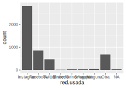
El resultado son solo los ejes, no se ha indicado aun qué variables graficar ni qué tipo de gráfico hacer. Eso se especifica en las capas.
Para hacer un gráfico de barras, luego de indicar sobre qué base se va a trabajar, en el argumento de ggplot, se agrega una capa de barras (geom_bar) con la variable que se va a representar (no hace falta indicar de qué matriz de datos proviene, eso ya está en el argumento de ggplot):
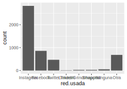
Y vamos a mejorarlo en su aspecto. Para quitar los NA, tomamos como argumento de ggplot, no la base completa, sino un subconjunto que no tenga NA en esta variable:
ggplot(subset(base.ejemplo, is.na(base.ejemplo$red.usada) == FALSE)) +
geom_bar(aes(red.usada)) + theme_gray(base_size = 9)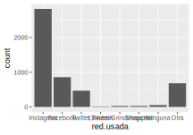
Además de hacer el gráfico (ejecutar el comando) podemos guardarlo como un objeto, lo llamamos p1:
p1 <- ggplot(subset(base.ejemplo, is.na(base.ejemplo$red.usada) == FALSE)) +
geom_bar(aes(red.usada)) +
theme_gray(base_size = 9)El objeto (de clase ggplot) aparece en el panel superior derecho. A las capas subsiguientes las agregamos sobre p1. Una capa de rótulos y se crea p2:
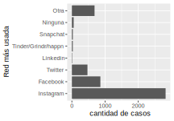
El paréntesis que encierra toda la expresión se usa para que, al mismo tiempo que se defina el objeto p2, se ejecute el comando y se vea el gráfico. Las etiquetas de los ejes se vuelven más legibles si se giran los ejes:
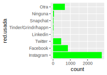
Vamos a usar este ejemplo para ilustrar la diferencia entre “fijar” y “mapear” a un atributo estético, que en este caso será el color de relleno de las barras, con el comando fill (rellenar). Fijar el color es simplemente establecerlo como preferencia para todas las barras, es un argumento de la capa geom_bar:
ggplot(subset(base.ejemplo, is.na(base.ejemplo$red.usada) == FALSE)) +
geom_bar(aes(red.usada), fill = "green") + coord_flip()Por el contrario, “mapear” es pedir que el color de relleno cambie en base a las categorías de una variable que se especifica, éste es un argumento de aes. Solo para ver los efectos, lo usamos con la misma variable que se representa en el eje:
ggplot(subset(base.ejemplo, is.na(base.ejemplo$red.usada) == FALSE)) +
geom_bar(aes(red.usada, fill = red.usada)) + coord_flip()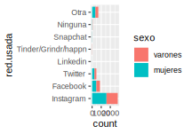
Y en el gráfico el cambio se ve en que se usó un color para cada categoría de red.usada.
Dos diferencias importantes en la sintaxis:
- el comando fill va dentro de aes cuando se mapea y fuera cuando se fija
- el color fijo (green en este ejemplo) va entre comillas, el nombre de la variable, no.
En este ejemplo, el mapeo no aporta ninguna información nueva, ya que el nombre de la red está en el eje. Sin embargo, el mapeo es muy útil para introducir otra variable y ver las diferencias, por ejemplo, para observar la diferencia en la preferencia de redes según sexo. Para hacerlo, se recorta la matriz de datos y se retienen solo los casos que no sean NA en red.usada ni tampoco en sexo. Para que se cumplan las dos condiciones indicamos la conjunción \(y\), con el símbolo \(\&\):
ggplot(subset(
base.ejemplo, is.na(
base.ejemplo$red.usada
) == FALSE & is.na(
base.ejemplo$sexo
) == FALSE
)) +
geom_bar(aes(red.usada, fill = sexo)) + coord_flip()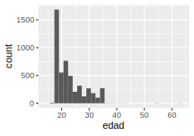
Aquí vemos que la preferencia por redes está bastante equilibrada entre mujeres y varones.
El histograma tiene su propia capa, geom_histogram. Para el caso de la variable edad:

Por defecto, se generan 30 intervalos, lo cual puede ajustarse, por ejemplo, a 15:
Las opciones de mapeo son como con geom_bar:
ggplot(subset(
base.ejemplo,
is.na(base.ejemplo$sexo) == FALSE
)) +
geom_histogram(aes(edad, fill = sexo), bins = 15)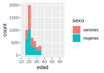
El polígono de frecuencias es una capa que se agrega al histograma:
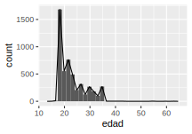
Si se quiere ajustar el número de intervalos, conviene hacerlo igual en las dos capas:
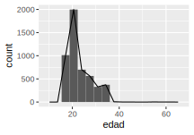
La ojiva tiene una capa llamada stat_ecdf, para el cálculo de la distribución de frecuencias acumuladas empíricas. Su sintaxis sigue la misma lógica: en aes se indica la variable que se grafica:
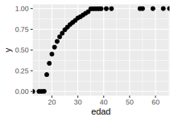
Por defecto grafica escalones, que representan los saltos de frecuencia, se puede modificar por puntos, con el argumento geom:
O estilizando los escalones con una línea:

Hay muchas opciones para mejorar la visualización de estos gráficos, que se irán presentando más adelante.
Disponible en: https://www.indec.gob.ar/ftp/cuadros/sociedad/EPHContinua_CIndividual.pdf↩︎
Disponible en: https://www.indec.gob.ar/ftp/cuadros/menusuperior/eph/EPH_disenoreg_09.pdf↩︎
La cantidad de valores depende de la precisión con que se haga la medición.↩︎